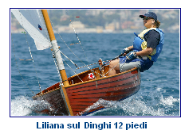

|
STORIA
"Quando nel 1913 George Cockshott, un progettista dilettante inglese, partecip� al concorso indetto dalla Boat Racing Association per una deriva (dinghy) di 12 piedi di lunghezza, certamente non pensava al successo che avrebbe potuto avere la sua barca anche all'estero. Era nato il Dinghy 12 piedi, un battello per diversi usi, regata e diporto, con il fasciame a clinker, lunga 3,66 metri e con una randa a gunter di 9,29 mq. Il regolamento specificava per tutte le parti dello scafo la qualit� del legname da usare".*(1)
Per partecipare alle olimpiadi olandesi con il nuovo singolo della classe 12 piedi, in Italia, a Trieste, furono bandite delle gare a eliminatoria tra il 7 e il 9 giugno del 1928. I concorrenti furono in totale 6, del Tirreno e dell'Adriatico.
Tito Nordio, dello YC Adriaco, prevalse e ebbe l'onore rappresentare l'Italia.
Conquist� il sesto posto che l'incoraggi� a cimentarsi ancora in quella classe. I primi Dinghy 12 piedi furono costruiti dal cantiere Depangher di Capodistria per l'impulso del marchese Emilio Nicol� Reggio e del ragioniere Enrico Pomi del Club Nautico Genova Sturla.
SPIRITO DI CLASSE
Per capire lo spirito e l'affetto che i soci hanno verso le proprie barchette basta leggere questa breve storia: la storia di Scignoria.
"Alcune tavole di mogano e spruce dell�Alaska messe da parte alla nascita della propria bambina, diverranno pi� tardi, con l�ausilio determinante  di Renzo Rabb�, il regalo di un padre per una ragazza ormai �navigata�. Gi�, perch� prima di Scignoria, la giovane Liliana De Negri aveva fatto �gavetta� su un�imbarcazione �di cortesia� di nome Zab�, non proprio il massimo, ma generosamente concessa in prestito dal Circolo Vele Vernazzolesi.
Il nuovo dinghy, Scignoria, realizzato con legni pregiati, con la deriva di acciaio inossidabile e �vari accorgimenti tecnologici�, promette proprio bene e mantiene le sue promesse dal 1963 al 1968, accompagnando l�abilit� e l�entusiasmo della sua navigatrice.
La separazione avviene, per�, un giorno lontano con la vendita del dinghy.
Inaspettatamente, in un giorno qualsiasi, a distanza di ben tre decenni, il ritrovamento, la ri-acquisizione del caro oggetto: il lieto ricordo torna a farsi realt�!
Liliana si riprende il suo compagno d�avventure, lo sottopone all�attento restauro di Angelo Oneto e lo rimette in acqua, sempre pronta a competere e a vincere, malgrado i nuovi dinghies siano pi� leggeri e agili, malgrado senta che le sue forze si sono un poco affievolite.
Sar�, ma nonostante la patina del tempo e lo scarto dell�innovazione tecnologica, qualche tavola traballante e alcune viti �ballerine�, Scignoria continua a regalare grandi soddisfazioni a Liliana�. Forse perch� dopo tutto solo lei � sempre stata la sua prima, vera e unica proprietaria."(3)
Liliana Negri � stata premiata al Dinghy Day 2007 di Genova come vincitrice master 2006.
(1) da i 70 anni della FIV
(2) Ostar = regata transatlantica in solitario
(3) atti del Dinghy Day 2007 ..............continua
|